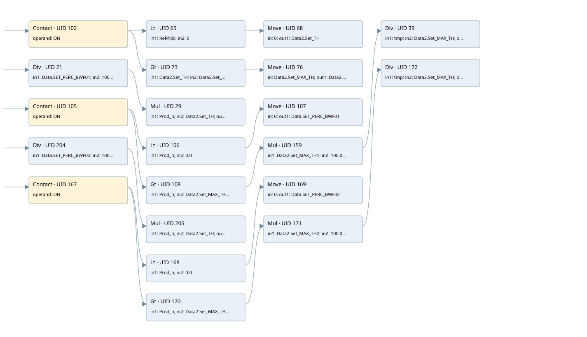

plant limits
analog output conversion · 검색 색인 순서 1 · 원본 내부 NID 추정 1
백업 PLF 원본의 3077924 바이트 위치에서 복원한 XML. 검색 문서 1679의 객체 키 16102200a566000000000000와 연결했다. 이름 해석 46/47개. 남은 RefId는 상수 또는 미해석 참조다.
연결 구조 다시 그리기
원본 Part/PCon/Wire를 이용한 연결도다. TIA 화면의 래더 배치 또는 실행 결과를 재현한 그림은 아니다. 핀 연결은 아래 표와 원본 XML을 기준으로 읽는다. 노드 위에 마우스를 두면 피연산자 이름을 볼 수 있다.

접점·코일·블록과 피연산자
| Part UID | Gate | Negated 핀 | 연결 피연산자 |
|---|---|---|---|
| 102 | Contact | operand = ON | |
| 65 | Lt | in1 = RefId 4 / ORef UID 80; in2 = 0 | |
| 68 | Move | in = 0; out1 = Data2.Set_TH | |
| 73 | Gt | in1 = Data2.Set_TH; in2 = Data2.Set_MAX_TH | |
| 76 | Move | in = Data2.Set_MAX_TH; out1 = Data2.Set_TH | |
| 21 | Div | in1 = Data.SET_PERC_BWF01; in2 = 100; out = Prod_h | |
| 29 | Mul | in1 = Prod_h; in2 = Data2.Set_TH; out = Prod_h | |
| 105 | Contact | operand = ON | |
| 106 | Lt | in1 = Prod_h; in2 = 0.0 | |
| 107 | Move | in = 0; out1 = Data.SET_PERC_BWF01 | |
| 108 | Gt | in1 = Prod_h; in2 = Data2.Set_MAX_TH1 | |
| 159 | Mul | in1 = Data2.Set_MAX_TH1; in2 = 100.0; out = tmp | |
| 39 | Div | in1 = tmp; in2 = Data2.Set_MAX_TH; out = Data.SET_PERC_BWF01 | |
| 204 | Div | in1 = Data.SET_PERC_BWF02; in2 = 100; out = Prod_h | |
| 205 | Mul | in1 = Prod_h; in2 = Data2.Set_TH; out = Prod_h | |
| 167 | Contact | operand = ON | |
| 168 | Lt | in1 = Prod_h; in2 = 0.0 | |
| 169 | Move | in = 0; out1 = Data.SET_PERC_BWF02 | |
| 170 | Gt | in1 = Prod_h; in2 = Data2.Set_MAX_TH2 | |
| 171 | Mul | in1 = Data2.Set_MAX_TH2; in2 = 100.0; out = tmp | |
| 172 | Div | in1 = tmp; in2 = Data2.Set_MAX_TH; out = Data.SET_PERC_BWF02 |
접점 경로를 펼친 조건식
Contact·O/A·비교기의 원본 연결을 읽기 쉽게 펼친 보조 해석이다. POWER는 전원 레일 시작을 뜻한다. 호출 블록·에지·타이머의 내부 동작과 다중 쓰기 순서는 이 표로 실행 검증하지 않았다. 미해석 핀과 RefId는 원문 연결표에서 확인한다.
| UID | 동작 | 대상 | 원본 접점 경로 | 내용 |
|---|---|---|---|---|
| 68 | Move | Data2.Set_TH | (ON AND [ORef UID 80 < 0]) | Move 입력 0 |
| 76 | Move | Data2.Set_TH | (ON AND [Data2.Set_TH > Data2.Set_MAX_TH]) | Move 입력 Data2.Set_MAX_TH |
| 107 | Move | Data.SET_PERC_BWF01 | (ON AND [Prod_h < 0.0]) | Move 입력 0 |
| 169 | Move | Data.SET_PERC_BWF02 | (ON AND [Prod_h < 0.0]) | Move 입력 0 |
원본 배선 연결
| Wire UID | 동일 Wire 연결 끝점 |
|---|---|
| 104 | Powerrail {} ↔ Part 102.in ↔ Part 21.en ↔ Part 105.in ↔ Part 204.en ↔ Part 167.in |
| 88 | ORef 79 (ON) ↔ Part 102.operand |
| 103 | Part 102.out ↔ Part 65.pre ↔ Part 73.pre |
| 89 | ORef 80 (RefId 4) ↔ Part 65.in1 |
| 90 | ORef 81 (0) ↔ Part 65.in2 |
| 91 | Part 65.out ↔ Part 68.en |
| 93 | ORef 82 (0) ↔ Part 68.in |
| 94 | Part 68.out1 ↔ ORef 83 (Data2.Set_TH) |
| 95 | ORef 84 (Data2.Set_TH) ↔ Part 73.in1 |
| 96 | ORef 85 (Data2.Set_MAX_TH) ↔ Part 73.in2 |
| 97 | Part 73.out ↔ Part 76.en |
| 99 | ORef 86 (Data2.Set_MAX_TH) ↔ Part 76.in |
| 100 | Part 76.out1 ↔ ORef 87 (Data2.Set_TH) |
| 22 | ORef 25 (Data.SET_PERC_BWF01) ↔ Part 21.in1 |
| 23 | ORef 26 (100) ↔ Part 21.in2 |
| 30 | Part 21.eno ↔ Part 29.en |
| 24 | Part 21.out ↔ ORef 27 (Prod_h) |
| 31 | ORef 34 (Prod_h) ↔ Part 29.in1 |
| 32 | ORef 35 (Data2.Set_TH) ↔ Part 29.in2 |
| 33 | Part 29.out ↔ ORef 36 (Prod_h) |
| 120 | ORef 110 (ON) ↔ Part 105.operand |
| 121 | Part 105.out ↔ Part 106.pre ↔ Part 108.pre |
| 122 | ORef 111 (Prod_h) ↔ Part 106.in1 |
| 123 | ORef 112 (0.0) ↔ Part 106.in2 |
| 124 | Part 106.out ↔ Part 107.en |
| 125 | ORef 113 (0) ↔ Part 107.in |
| 126 | Part 107.out1 ↔ ORef 114 (Data.SET_PERC_BWF01) |
| 127 | ORef 115 (Prod_h) ↔ Part 108.in1 |
| 128 | ORef 116 (Data2.Set_MAX_TH1) ↔ Part 108.in2 |
| 37 | Part 108.out ↔ Part 159.en |
| 164 | ORef 160 (Data2.Set_MAX_TH1) ↔ Part 159.in1 |
| 165 | ORef 161 (100.0) ↔ Part 159.in2 |
| 40 | Part 159.eno ↔ Part 39.en |
| 166 | Part 159.out ↔ ORef 162 (tmp) |
| 41 | ORef 44 (tmp) ↔ Part 39.in1 |
| 42 | ORef 45 (Data2.Set_MAX_TH) ↔ Part 39.in2 |
| 43 | Part 39.out ↔ ORef 46 (Data.SET_PERC_BWF01) |
| 213 | ORef 206 (Data.SET_PERC_BWF02) ↔ Part 204.in1 |
| 214 | ORef 207 (100) ↔ Part 204.in2 |
| 215 | Part 204.eno ↔ Part 205.en |
| 216 | Part 204.out ↔ ORef 208 (Prod_h) |
| 217 | ORef 209 (Prod_h) ↔ Part 205.in1 |
| 218 | ORef 210 (Data2.Set_TH) ↔ Part 205.in2 |
| 219 | Part 205.out ↔ ORef 211 (Prod_h) |
| 187 | ORef 173 (ON) ↔ Part 167.operand |
| 188 | Part 167.out ↔ Part 168.pre ↔ Part 170.pre |
| 189 | ORef 174 (Prod_h) ↔ Part 168.in1 |
| 190 | ORef 175 (0.0) ↔ Part 168.in2 |
| 191 | Part 168.out ↔ Part 169.en |
| 192 | ORef 176 (0) ↔ Part 169.in |
| 193 | Part 169.out1 ↔ ORef 177 (Data.SET_PERC_BWF02) |
| 194 | ORef 178 (Prod_h) ↔ Part 170.in1 |
| 195 | ORef 179 (Data2.Set_MAX_TH2) ↔ Part 170.in2 |
| 196 | Part 170.out ↔ Part 171.en |
| 197 | ORef 180 (Data2.Set_MAX_TH2) ↔ Part 171.in1 |
| 198 | ORef 181 (100.0) ↔ Part 171.in2 |
| 199 | Part 171.eno ↔ Part 172.en |
| 200 | Part 171.out ↔ ORef 182 (tmp) |
| 201 | ORef 183 (tmp) ↔ Part 172.in1 |
| 202 | ORef 184 (Data2.Set_MAX_TH) ↔ Part 172.in2 |
| 203 | Part 172.out ↔ ORef 185 (Data.SET_PERC_BWF02) |
식별자 해석 근거 47개
| ORef UID | RefId | 이름 | IdentXmlPart 파일 | 해석 방법 |
|---|---|---|---|---|
| 79 | 1 | ON | 0664-IdentXmlPart.xml | UID/RID + search-text + NID agreement |
| 80 | 4 | 미해석 RefId | 식별 선언 원본 참조 | 미해석 |
| 81 | 5 | 0 | 0661-IdentXmlPart.xml | literal candidate: UID/RID/NID + nearby named declarations + search-text agreement |
| 82 | 5 | 0 | 0661-IdentXmlPart.xml | literal candidate: UID/RID/NID + nearby named declarations + search-text agreement |
| 83 | 4 | Data2.Set_TH | 0662-IdentXmlPart.xml | UID/RID + search-text + NID agreement |
| 84 | 4 | Data2.Set_TH | 0662-IdentXmlPart.xml | UID/RID + search-text + NID agreement |
| 85 | 7 | Data2.Set_MAX_TH | 0662-IdentXmlPart.xml | UID/RID + search-text + NID agreement |
| 86 | 7 | Data2.Set_MAX_TH | 0662-IdentXmlPart.xml | UID/RID + search-text + NID agreement |
| 87 | 4 | Data2.Set_TH | 0662-IdentXmlPart.xml | UID/RID + search-text + NID agreement |
| 25 | 10 | Data.SET_PERC_BWF01 | 0662-IdentXmlPart.xml | UID/RID + search-text + NID agreement |
| 26 | 12 | 100 | 0661-IdentXmlPart.xml | literal candidate: UID/RID/NID + nearby named declarations + search-text agreement |
| 27 | 111 | Prod_h | 0663-IdentXmlPart.xml | UID/RID + search-text + NID agreement |
| 34 | 111 | Prod_h | 0663-IdentXmlPart.xml | UID/RID + search-text + NID agreement |
| 35 | 4 | Data2.Set_TH | 0662-IdentXmlPart.xml | UID/RID + search-text + NID agreement |
| 36 | 111 | Prod_h | 0663-IdentXmlPart.xml | UID/RID + search-text + NID agreement |
| 110 | 1 | ON | 0664-IdentXmlPart.xml | UID/RID + search-text + NID agreement |
| 111 | 111 | Prod_h | 0663-IdentXmlPart.xml | UID/RID + search-text + NID agreement |
| 112 | 112 | 0.0 | 0661-IdentXmlPart.xml | literal candidate: UID/RID/NID + nearby named declarations + search-text agreement |
| 113 | 5 | 0 | 0661-IdentXmlPart.xml | literal candidate: UID/RID/NID + nearby named declarations + search-text agreement |
| 114 | 10 | Data.SET_PERC_BWF01 | 0662-IdentXmlPart.xml | UID/RID + search-text + NID agreement |
| 115 | 111 | Prod_h | 0663-IdentXmlPart.xml | UID/RID + search-text + NID agreement |
| 116 | 23 | Data2.Set_MAX_TH1 | 0662-IdentXmlPart.xml | UID/RID + search-text + NID agreement |
| 160 | 23 | Data2.Set_MAX_TH1 | 0662-IdentXmlPart.xml | UID/RID + search-text + NID agreement |
| 161 | 118 | 100.0 | 0661-IdentXmlPart.xml | literal candidate: UID/RID/NID + nearby named declarations + search-text agreement |
| 162 | 114 | tmp | 0663-IdentXmlPart.xml | UID/RID + search-text + NID agreement |
| 44 | 114 | tmp | 0663-IdentXmlPart.xml | UID/RID + search-text + NID agreement |
| 45 | 7 | Data2.Set_MAX_TH | 0662-IdentXmlPart.xml | UID/RID + search-text + NID agreement |
| 46 | 10 | Data.SET_PERC_BWF01 | 0662-IdentXmlPart.xml | UID/RID + search-text + NID agreement |
| 206 | 30 | Data.SET_PERC_BWF02 | 0662-IdentXmlPart.xml | UID/RID + search-text + NID agreement |
| 207 | 12 | 100 | 0661-IdentXmlPart.xml | literal candidate: UID/RID/NID + nearby named declarations + search-text agreement |
| 208 | 111 | Prod_h | 0663-IdentXmlPart.xml | UID/RID + search-text + NID agreement |
| 209 | 111 | Prod_h | 0663-IdentXmlPart.xml | UID/RID + search-text + NID agreement |
| 210 | 4 | Data2.Set_TH | 0662-IdentXmlPart.xml | UID/RID + search-text + NID agreement |
| 211 | 111 | Prod_h | 0663-IdentXmlPart.xml | UID/RID + search-text + NID agreement |
| 173 | 1 | ON | 0664-IdentXmlPart.xml | UID/RID + search-text + NID agreement |
| 174 | 111 | Prod_h | 0663-IdentXmlPart.xml | UID/RID + search-text + NID agreement |
| 175 | 112 | 0.0 | 0661-IdentXmlPart.xml | literal candidate: UID/RID/NID + nearby named declarations + search-text agreement |
| 176 | 5 | 0 | 0661-IdentXmlPart.xml | literal candidate: UID/RID/NID + nearby named declarations + search-text agreement |
| 177 | 30 | Data.SET_PERC_BWF02 | 0662-IdentXmlPart.xml | UID/RID + search-text + NID agreement |
| 178 | 111 | Prod_h | 0663-IdentXmlPart.xml | UID/RID + search-text + NID agreement |
| 179 | 38 | Data2.Set_MAX_TH2 | 0662-IdentXmlPart.xml | UID/RID + search-text + NID agreement |
| 180 | 38 | Data2.Set_MAX_TH2 | 0662-IdentXmlPart.xml | UID/RID + search-text + NID agreement |
| 181 | 118 | 100.0 | 0661-IdentXmlPart.xml | literal candidate: UID/RID/NID + nearby named declarations + search-text agreement |
| 182 | 114 | tmp | 0663-IdentXmlPart.xml | UID/RID + search-text + NID agreement |
| 183 | 114 | tmp | 0663-IdentXmlPart.xml | UID/RID + search-text + NID agreement |
| 184 | 7 | Data2.Set_MAX_TH | 0662-IdentXmlPart.xml | UID/RID + search-text + NID agreement |
| 185 | 30 | Data.SET_PERC_BWF02 | 0662-IdentXmlPart.xml | UID/RID + search-text + NID agreement |
검색 코드 보조 자료
참조 명칭을 찾기 위한 자료이며 실행 순서나 AND/OR 관계는 위 연결표로 확인한다.
"on" "data2".set_th 0 move 0 div "data".set_perc_bwf01 100 mul #prod_h "data2".set_th #prod_h #prod_h "on" #prod_h 0.0 move 0 #prod_h "data2".set_max_th1 mul "data2".set_max_th1 100.0 div #tmp "data2".set_max_th #tmp "data".set_perc_bwf01 "data".set_perc_bwf01 div "data".set_perc_bwf02 100 mul #prod_h "data2".set_th #prod_h #prod_h "on" #prod_h 0.0 move 0 #prod_h "data2".set_max_th2 mul "data2".set_max_th2 100.0 div #tmp "data2".set_max_th #tmp "data".set_perc_bwf02 "data".set_perc_bwf02 "data2".set_th "data2".set_max_th move "data2".set_max_th "data2".set_th "data2".set_th